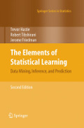
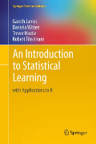

 
The Elements of Statistical Learning: Data Mining, Inference, and Prediction.
Stanford - Trevor Hastie, Robert Tibshirani, Jerome Friedman
An Introduction to Statistical Learning
Gareth James, Daniela Witten, Trevor Hastie and Robert Tibshirani
Général
Econometrics - Modern Approach
Book econometrics - Moder Approach 5th
How to Lie with Statistics

Probabilistic Systems Analysis and Applied Probability

{kind=link}
Introduction to Statistics and Data
Analysis for Physicists http://www-library.desy.de/preparch/books/vstatmp_engl.pdf
NIST/SEMATECH e-Handbook
NIST/SEMATECH e-Handbook of Statistical Methods
Artificial Intelligence
 MIT ocw Artificial Intelligence
Prof. Patrick Henry Winston
MIT ocw Artificial Intelligence
Prof. Patrick Henry Winston
Autres
Séries temporelles
Lionel TRUQUET - Ensai (statistique & analyse de l'information) cours
Statistique Inferentielle
-
book Statistical Inference - George Casella, Roger L. Berger - Duxbury Press (2001).pdf
-
cours Statistique Inferentielle Avancée - Imag - Olivier Gaudoin
-
Introduction à la statistique inférentielle Didier Concordet, Unité de Biometrie, Ecole Veterinaire de Toulouse